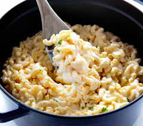

Simple Macaroni and Cheese Recipe

A quick and easy cheesy delight
This stovetop mac and cheese uses staple ingredients and comes together in just 25 minutes.
You'll want to bookmark this recipe for busy weeknights.
The good news is, it's so simple that once you make it a couple times, you'll likely have it memorized.
Serves 4
Ingredients
- 230g elbow macaroni
- 1/4 butter
- 1/4 all-purpose butter
- 1/2 teaspoon salt
- ground black pepper to taste
- 2 cups milk
- 2 cups shredded cheddar cheese
Steps
- Bring a large pot of lightly salted water to a boil.
Cook elbow macaroni in the boiling water, stirring occasionally until cooked through but firm to the bite, 8 minutes.
- At the same time, melt butter in a saucepan over medium heat.
Add flour, salt, and pepper and stir until smooth, about 5 minutes.
Pour in milk slowly, while stirring continuously.
Continue to cook and stir until mixture is smooth and bubbling, about 5 minutes, making sure the milk doesn't burn.
- Add Cheddar cheese and stir until melted, 2 to 4 minutes.
- Drain macaroni and fold into cheese sauce until coated.
- Serve and Enjoy!